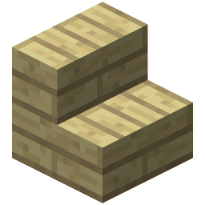

TREES & WOOD
IGME-235
DAVID GREEN
DAVID GREEN
THE OAK TREE
A tree is a common generated structure that consists of log and leaf blocks. It's the base component used to make all wooden items.
There are six types of trees – oak, spruce, birch, jungle, acacia, and dark oak. Oak trees are one of the most common types of Tree. They're unique in that they have the smallest space requirements, and along with dark oak trees, they can drop an apple when their leaf block is destroyed. Oak trees require a 1×1 column of unobstructed space at least 4 blocks above the sapling to grow (5 blocks including the sapling itself).
Oak trees are unique in that they can still grow when the base and trunk are enclosed on all sides. Their growth is not hindered by logs, leaves, dirt, and saplings. Oak Trees can be found in most biomes in the overworld, excluding Deserts, Birch Forests, and Taigas.

PLANKS

Planks are common blocks used in crafting recipes and are also the first thing that a player can craft in survival mode and adventure mode.
Two categories of planks can be differentiated: flammable Overworld Planks made from tree logs, and nonflammable Nether Planks made from fungi stems.
STICKS

A stick is an item made from any kind of plank during crafting. This item is used for crafting many other tools and items.
These other items and tools include swords, arrows, axes, pickaxes, torches, bows, fishing rods, ladders, shovels, hoes, and lots more.
CHESTS

A chest is another item that's made from any kind of plank during crafting. It can store any items and other blocks as well as combine with itself to become larger.
A small chest has 27 slots of inventory space, and a large chest has twice that amount, at 54 slots.
STAIRS
Stairs are blocks that allow mobs and players to change elevation without jumping. They can be created using any one type and color of wood or any one type of stone.
Fun Fact: Walking up stairs is faster than jumping up the same distance.